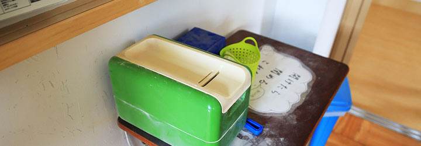

学園の特徴

児童生徒一人ひとりの持つ個性を伸ばしていく学習システムで、夢に向かって羽ばたく“実現力”を育てます。
ほそごう学園では、小中一貫教育ならではの特徴を活かして、1年から９年までの子どもたちが、ともに学びあ
い成長する教育環境をつくります。
ほそごう学園がめざす教育：9年間一貫して子どもを育てる
小中一貫して子どもたちを見ることができるため、計画的な学習を丁寧に指導できるメリットがあります。
9年間を一貫して学力と生きる力を育てる
 地域と人権とキャリアの学習で学びの基礎を育てる
地域と人権とキャリアの学習で学びの基礎を育てる- 自然と歴史に彩られた細郷をフィールドに地域を学び、人間関係づくりと人権意識を高め、自ら進路を切り拓くキャリア形成の学習を創造します。
9年間に渡る、つながりのある支援教育：一体型小中一貫校のメリットを最大限に活かす
- 小中一貫校としてチーム支援体制をつくる
- 小中合同の支援チームを校内に設けます。
- 区切れない連続した子ども理解をめざす
- 子どもと保護者の声を９年間継続してしっかりと受け止めます。
- これまでの育ちを踏まえ、将来の自立をめざす9年間の支援教育を行う
- 9年間の継続した視点での「個別の教育支援計画及び指導計画」を作成します。
- 支援学級と通級指導教室が連携して、個々の育ちの指導・支援を行う
- 通常学級担任と支援学級担任、通級指導教室担当者が連携して学習を行います。
地域・社会とともに育つ学園
- ユニバーサルデザインで育てる９年間の学びと育ち
- 子ども一人ひとりが大切にされ、子どもどうしがつながり、子どもたちが主体的に学習に参加できる教育環境を整えること。